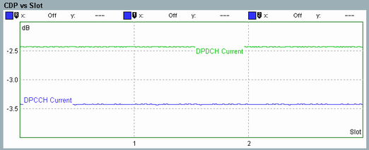

Code Domain Power
A code domain power (CDP) measurement provides the power of the individual code channels of a CDMA signal. The power in each code channel is averaged over a suitable time interval (e.g. a slot) and expressed in dB, relative to the power of the total, composite CDMA signal.
Typically, the following measurement tasks can be performed:
- Compare different physical channel powers within a CDMA signal
- Compare the observed channel powers with the signaled values (gain factors)
- Monitor active and inactive channels
In the following figure, the CDP of the DPCCH and the DPDCH in an uplink WCDMA signal is displayed over a measurement period of 120 WCDMA slots. The average DPDCH power is approximately 1 dB above the average DPCCH power.
